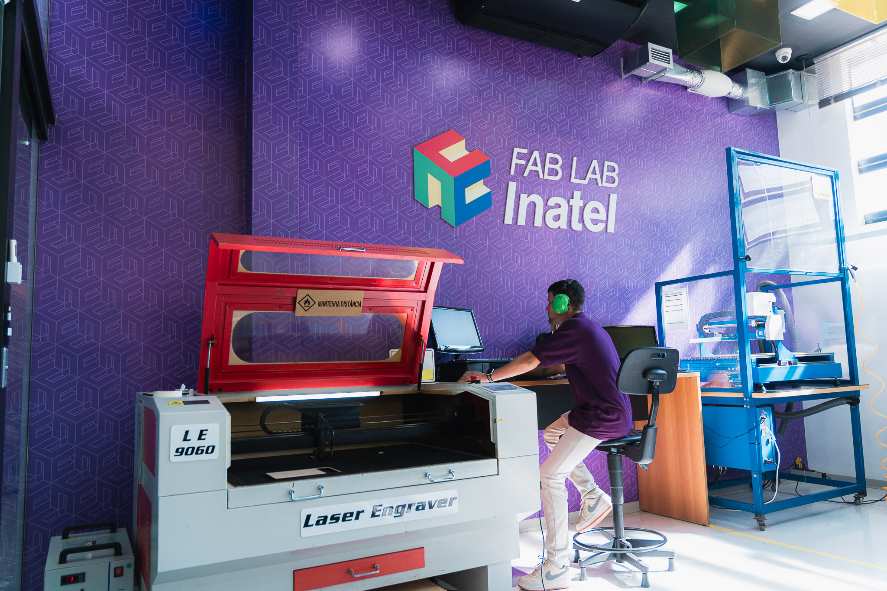
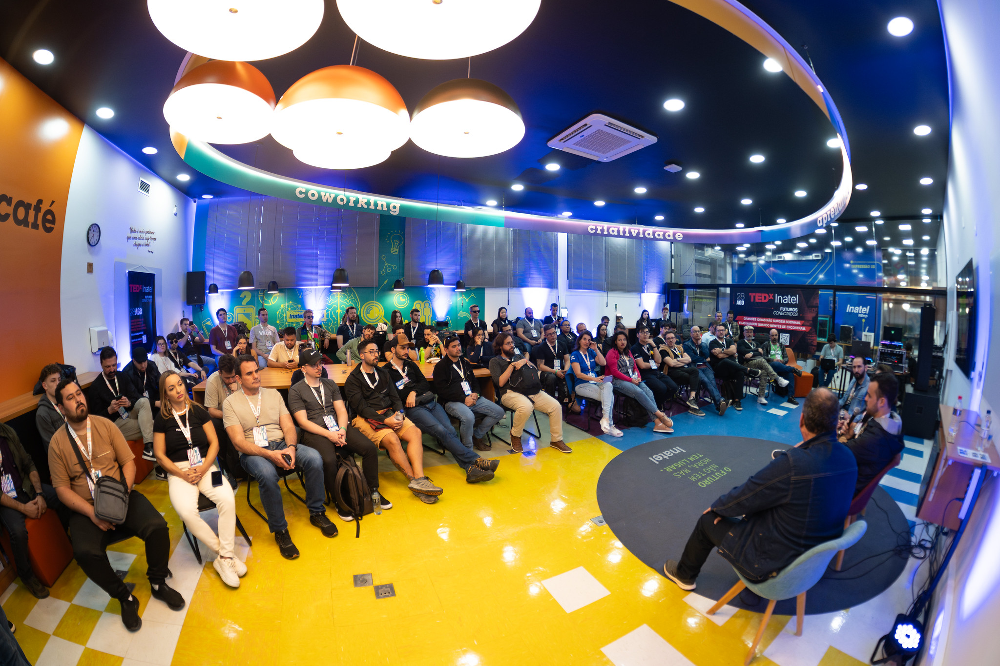
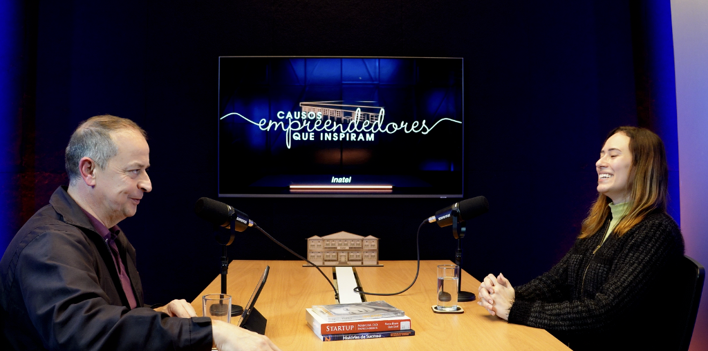

Rede MIT
Fab Lab Inatel
Subtítulo explicativo
Estrutura e Recursos Disponíveis
Estrutura de ponta focada em viabilizar conexões, aprendizado ativo e suporte físico para criação de MVPs industriais, eletrônica e produção de mídias de alto impacto.

Rede MITLaboratório de prototipagem no padrão da rede mundial do MIT. Estrutura completa com impressoras 3D, corte a laser, fresadoras de precisão e eletrônica para tirar sua ideia do papel.

Design ThinkingAmbiente lúdico e modular projetado para dinâmicas colaborativas. O espaço ideal para sessões de Design Thinking, brainstorming, workshops criativos e hackathons da sua startup.

Gravação 4KEstúdio profissional com infraestrutura de ponta para gravação de podcasts, videocasts e cursos. Produção audiovisual completa com suporte especializado e captação 4K.